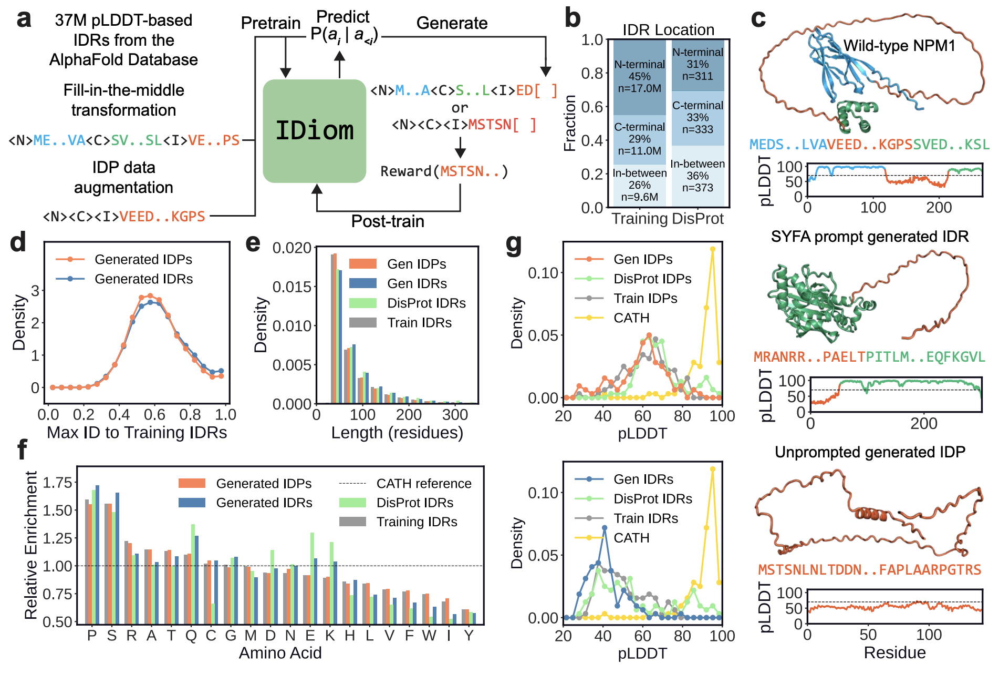
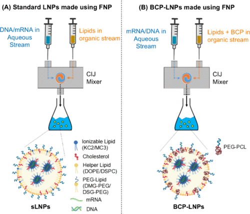
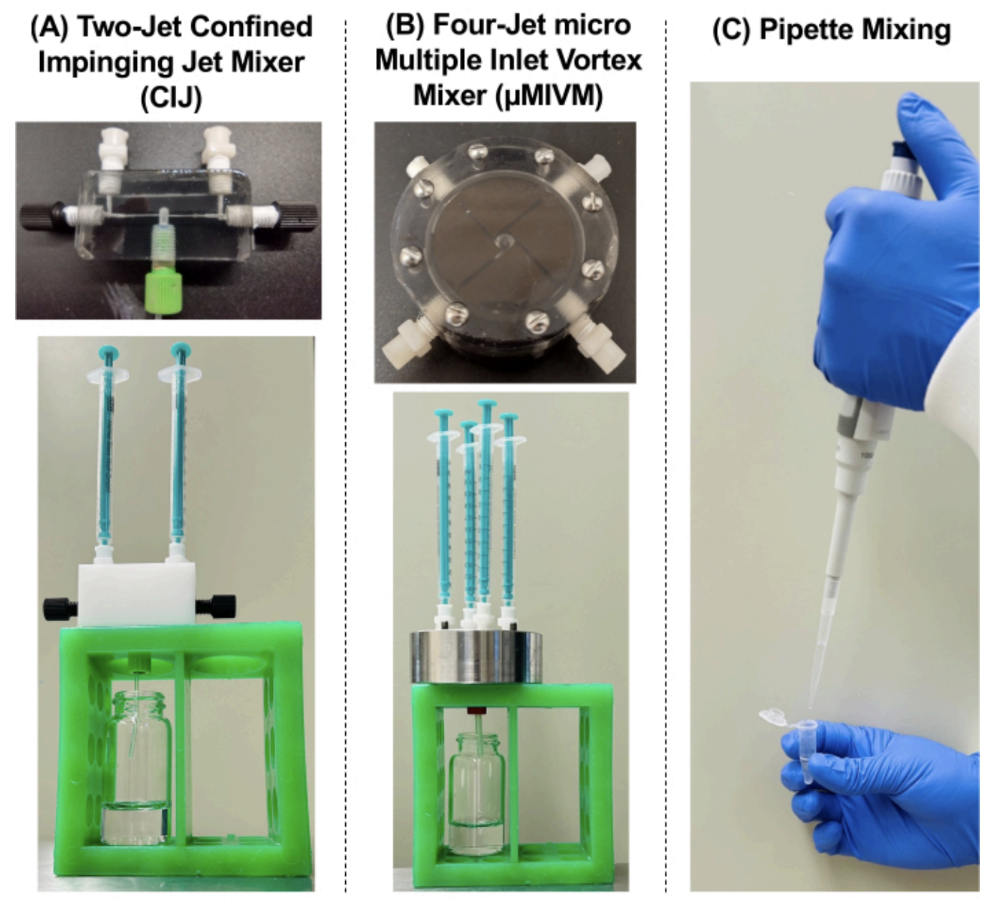
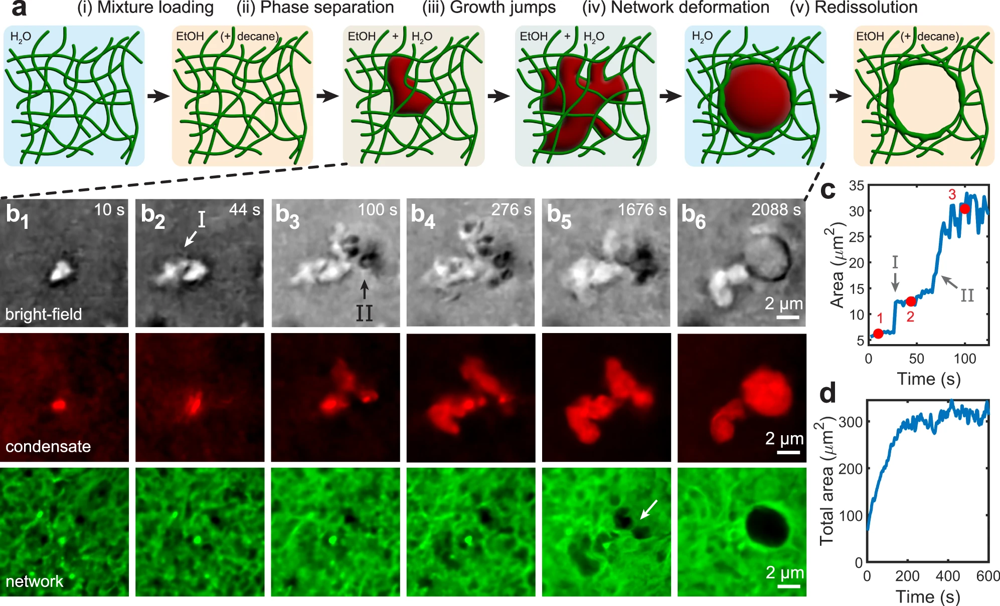
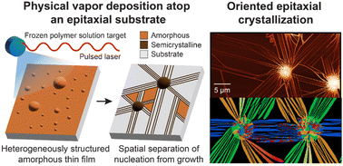
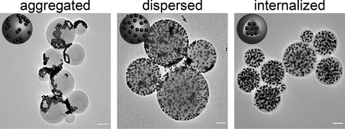
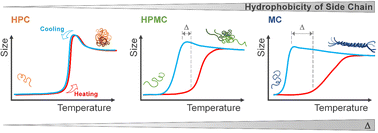
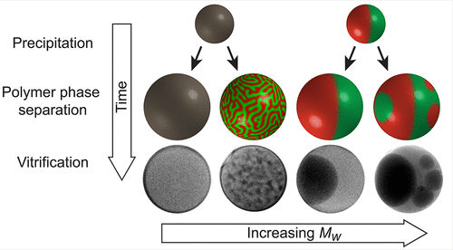

Select Research

Generative design of intrinsically disordered protein regions with
IDiom
Jason X. Liu, Sebastian Ibarraran, Frank Hu, Abigail Park, Alexander R. Dunn, Grant M. Rotskoff
bioRxiv (2026); ICML 2026 Workshop on Generative and Agentic AI for Biology
Jason X. Liu, Sebastian Ibarraran, Frank Hu, Abigail Park, Alexander R. Dunn, Grant M. Rotskoff
bioRxiv (2026); ICML 2026 Workshop on Generative and Agentic AI for Biology

Diblock Copolymer Targeted Lipid Nanoparticles: Next-Generation Nucleic Acid Delivery System Produced by Confined Impinging Jet Mixers
Bumjun Kim, Sai Nikhil Subraveti, Jason X. Liu, Satya K. Nayagam, Safaa Merghoul, Nicholas J. Caggiano, David F. Amelemalh, Ting Jiang, Navid Bizmark, Jonathan M. Conway, Andrew Tsourkas, Robert K. Prud'homme
ACS Applied Bio Materials (2024)
Bumjun Kim, Sai Nikhil Subraveti, Jason X. Liu, Satya K. Nayagam, Safaa Merghoul, Nicholas J. Caggiano, David F. Amelemalh, Ting Jiang, Navid Bizmark, Jonathan M. Conway, Andrew Tsourkas, Robert K. Prud'homme
ACS Applied Bio Materials (2024)

Synthesizing Lipid Nanoparticles by Turbulent Flow in
Confined Impinging Jet Mixers
Sai Nikhil Subraveti, Brian K. Wilson, Navid Bizmark, Jason Liu, Robert K. Prud'homme
JoVE (Journal of Visualized Experiments) (2024)
Sai Nikhil Subraveti, Brian K. Wilson, Navid Bizmark, Jason Liu, Robert K. Prud'homme
JoVE (Journal of Visualized Experiments) (2024)

Liquid–liquid phase separation within fibrillar networks
Jason X. Liu, Mikko P. Haataja, Andrej Košmrlj, Sujit S. Datta, Craig B. Arnold, Rodney D. Priestley
Nature Communications (2023, Editors' Highlight)
Jason X. Liu, Mikko P. Haataja, Andrej Košmrlj, Sujit S. Datta, Craig B. Arnold, Rodney D. Priestley
Nature Communications (2023, Editors' Highlight)

Anisotropic material depletion in epitaxial polymer
crystallization
Jason X. Liu, Yang Xia, Yucheng Wang, Mikko P. Haataja, Craig B. Arnold, Rodney D. Priestley
Soft Matter (2023)
Jason X. Liu, Yang Xia, Yucheng Wang, Mikko P. Haataja, Craig B. Arnold, Rodney D. Priestley
Soft Matter (2023)

Tuning Morphologies and Reactivities of Hybrid Organic–Inorganic
Nanoparticles
Joanna Schneider, Jason X. Liu, Victoria E. Lee, Robert K. Prud'homme, Sujit S. Datta, Rodney D. Priestley
ACS Nano (2022)
Joanna Schneider, Jason X. Liu, Victoria E. Lee, Robert K. Prud'homme, Sujit S. Datta, Rodney D. Priestley
ACS Nano (2022)

Hysteresis in the thermally induced phase transition of cellulose
ethers
Navid Bizmark, Nicholas J. Caggiano, Jason X. Liu, Craig B. Arnold, Robert K. Prud'homme, Sujit S. Datta, Rodney D. Priestley
Soft Matter (2022)
Navid Bizmark, Nicholas J. Caggiano, Jason X. Liu, Craig B. Arnold, Robert K. Prud'homme, Sujit S. Datta, Rodney D. Priestley
Soft Matter (2022)

Evolution of Polymer Colloid Structure During Precipitation and Phase
Separation
Jason X. Liu, Navid Bizmark, Douglas M. Scott, Richard A. Register, Mikko P. Haataja, Sujit S. Datta, Craig B. Arnold, Rodney D. Priestley
JACS Au (2021)
Jason X. Liu, Navid Bizmark, Douglas M. Scott, Richard A. Register, Mikko P. Haataja, Sujit S. Datta, Craig B. Arnold, Rodney D. Priestley
JACS Au (2021)